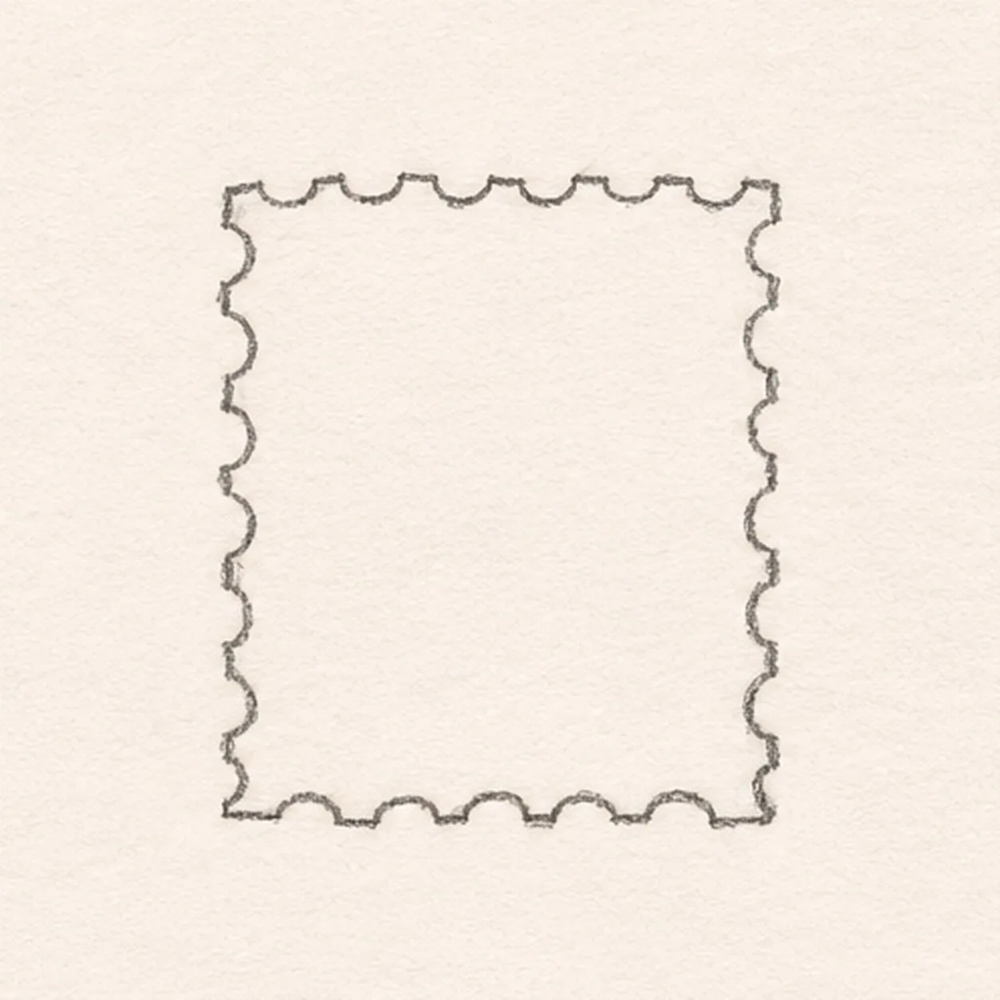
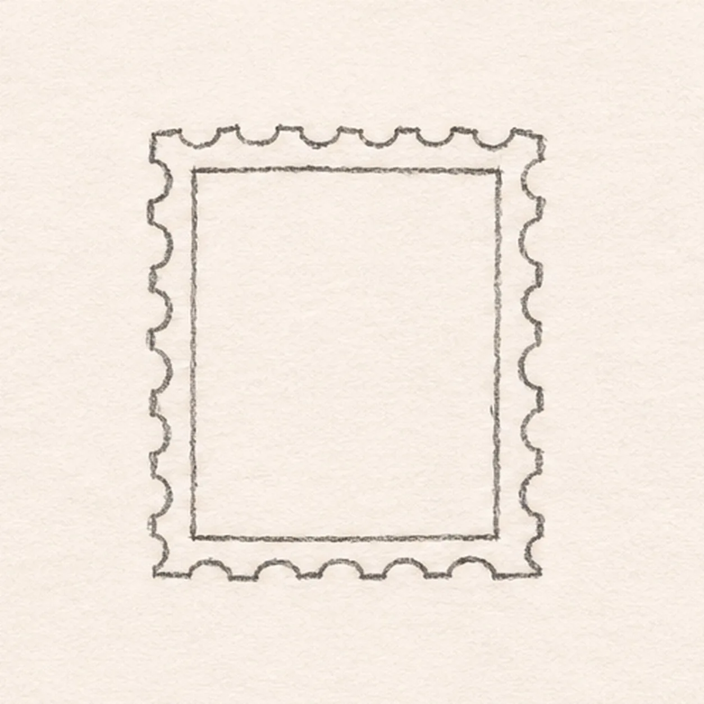
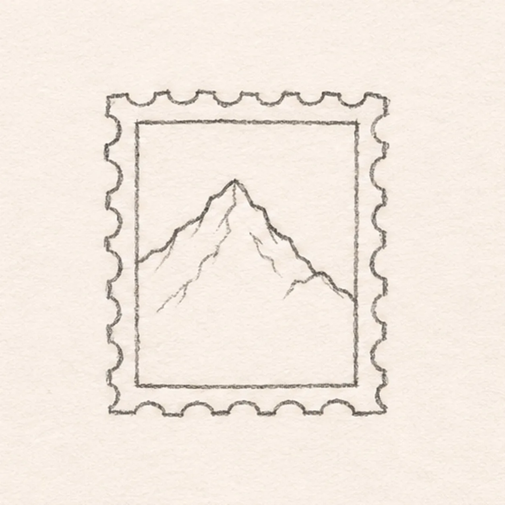
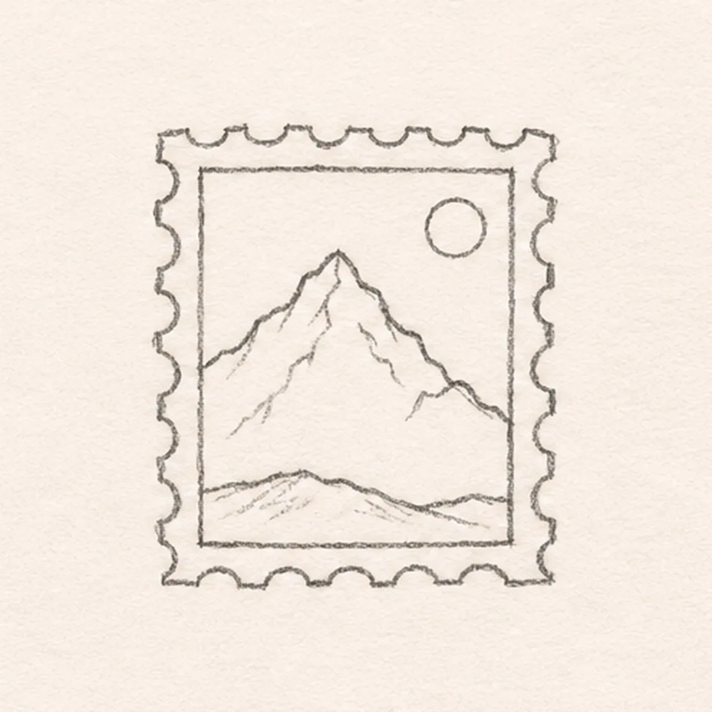
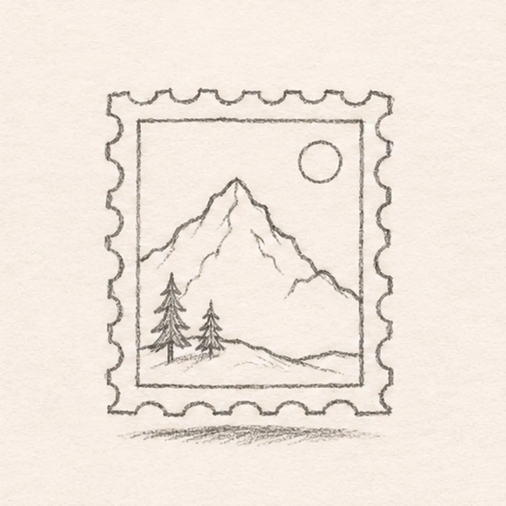

From the archive
Let's draw a postage stamp
Treat this as one small practice round: build the subject lightly, notice the shapes, then darken only the lines that help the finished sketch.
-
01

Set the stamp edge
Begin at the upper-left corner, travel clockwise around a small upright rectangle, and make the edge lightly tooth-like. Close at your starting corner, leaving generous white paper around it.
Sketch tip: Make the four corners first, then let the soft edge teeth connect them.
-
02

Inset the picture frame
About a pencil width inside the outer edge, draw a narrow rectangular frame. Keep its top and side margins even and close its lower edge above the bottom teeth.
Sketch tip: Compare the top and bottom margins before closing the inner frame.
-
03

Raise the mountain
Within the frame, climb from the lower left toward a tall peak near the center, descend to a smaller shoulder on the right, and meet the right border. Keep the line inside the picture window.
Sketch tip: Keep the tall peak near the center and let the smaller shoulder descend to the right.
-
04

Place hill and sun
Sweep a shallow foothill from the lower-left window edge to the lower-right edge, crossing in front of the mountain base. Draw a small circle in the open upper-right sky.
Sketch tip: Keep the sun entirely above and to the right of the mountain.
-
05

Plant two pines and ground
On the left foothill, draw two small tapered pines rooted to the existing line. Add a short broken graphite shadow directly beneath the lower edge.
Sketch tip: Count two pines rooted to the same foothill, then break the shadow below the paper edge.
-
06
Shade the small landscape
Use a 2B pencil to shade one side of the existing mountain ridge and both small pines. Add pale blue pencil within the established sky and mountain shapes, leaving the sun and margin white. Deepen the existing broken ground shadow.
Sketch tip: Keep the stamp margin pale so the little landscape remains readable.